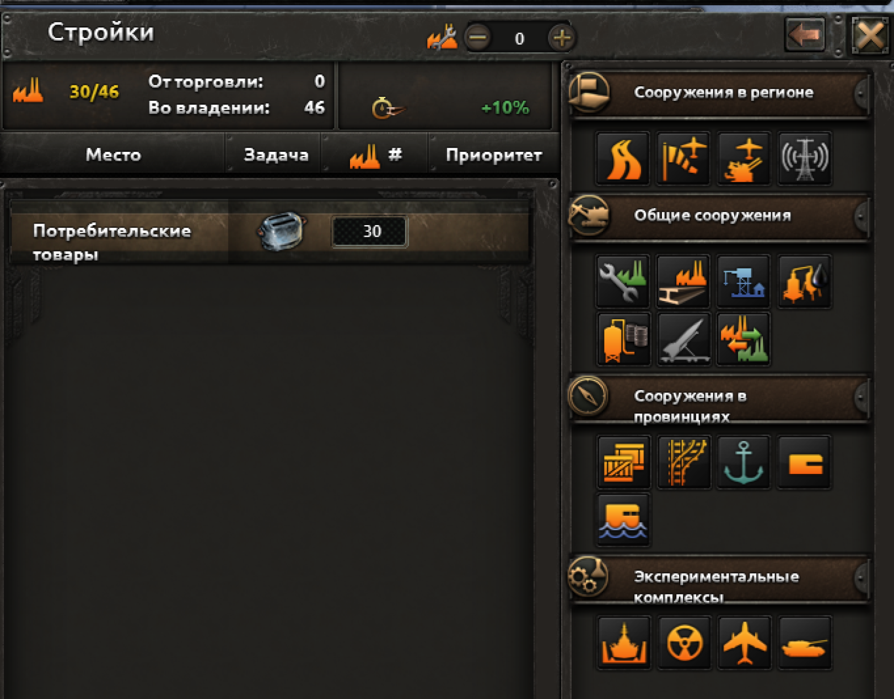

Здесь можно узнать о игре шаблонов танков, самолётов и кораблей.
Там же я поделился своим нечилым опытом в этой игре.
Hearts of Iron IV (в русской локализации — «День Победы IV»)
— компьютерная игра в жанре глобальной стратегии, разработанная шведской
компанией Paradox Development Studios и изданная компанией Paradox
Interactive. Сюжет: игра охватывает период Второй итало-эфиопской войны,
Гражданской войны в Испании, Гражданской войны в Китае, Второй
японо-китайской войны и Второй мировой войны.
Особенности игры:
Глобальная карта: Охватывает весь мир с детализированными государствами
(1936–1948 гг.).
Управление страной: Экономика: Производство оружия, ресурсы,
строительство. Дипломатия: Создание альянсов, объявление войн, переговоры.
Технологии: Развитие армии, авиации, флота и ядерного оружия.
Тактика и стратегия:
Контроль дивизий, планирование операций (система "Боевых планов").
Возможность менять ход истории (например, восстановить монархию в Германии
или сделать СССР демократическим).
Моды: Огромное количество модификаций (например, Kaiserreich, The New
Order).
Критика и популярность: Игра сложна для новичков, но очень глубокая для
фанатов стратегий. Регулярно выходят DLC, добавляющие новые механики
(например, No Step Back — улучшенные танки и СССР).
Строительство в Hearts of Iron IV
В HOI4 строительство — ключевой элемент экономики и военной подготовки. От правильного распределения фабрик, инфраструктуры и укреплений зависит успех в войне.

Интерфейс строительства в Hearts of Iron IV
1. Типы строений
Гражданские фабрики (ЦИВы)
Зачем: Строят другие объекты, торгуют за ресурсы.
Где строить: В регионах с высокой инфраструктурой (эффективность +20%).
Важно: В начале игры (1936–1939) стоит наращивать ЦИВы, чтобы потом быстрее строить военные заводы.
Военные фабрики (ВПы)
Зачем: Производство оружия, техники, самолётов, кораблей.
Совет: Строить перед войной (с 1939–1941).
Верфи
Зачем: Строят корабли и подлодки.
Где: В прибрежных регионах (иначе — штраф к скорости).
Инфраструктура
Зачем: Увеличивает эффективность строительства и поставку ресурсов.
Уровень 1–10: Чем выше, тем быстрей стройка и больше ресурсов добывается.
Где улучшать: В регионах с дефицитом ресурсов (нефть, сталь, вольфрам).
Укрепления (Крепости, бункеры, ПВО)
Линия Мажино, Сталинская линия и др.: Замедляют врага, дают бонусы к обороне.
ПВО снижает урон от бомбардировок.
Когда строить: Если играете за оборонительные страны (Франция, Чехословакия, СССР).
Аэродромы и радары
Аэродромы: Чем больше — тем больше самолётов можно разместить.
Радары: Увеличивают эффективность ПВО и авиации в регионе.
Ракетные площадки и ядерные реакторы
Нужны для производства ракет и атомных бомб (поздняя игра).
2. Где и что строить?
Оптимальная стратегия:
1936–1938:
Строим ЦИВы (чтобы потом быстрее строить ВПы).
Улучшаем инфраструктуру в ключевых промышленных зонах (Германия — Руре, СССР — Урал).
1939–1941:
Переключаемся на военные заводы (если готовитесь к войне).
Укрепляем границы (бункеры, ПВО).
Во время войны:
Ремонт разрушенных фабрик.
Строим аэродромы и радары в прифронтовых зонах.
Региональные особенности:
США: Можно строить всё везде (много ресурсов и фабрик).
СССР: Улучшать инфраструктуру в Сибири для доступа к ресурсам.
Германия: Усиливать Руру и Рейнланд.
Япония: Развивать верфи и авиазаводы.
3. Полезные советы
Приоритет строительства:
ЦИВы → ВПы → инфраструктура → укрепления.
Если не хватает ресурсов — сначала улучшайте инфраструктуру в ресурсных регионах.
Ошибки новичков:
Строить ВПы в 1936 году (не хватит ЦИВов для быстрой стройки).
Игнорировать инфраструктуру (без неё фабрики работают на 50% медленнее).
Строить укрепления на всех границах (лучше — только ключевые точки).